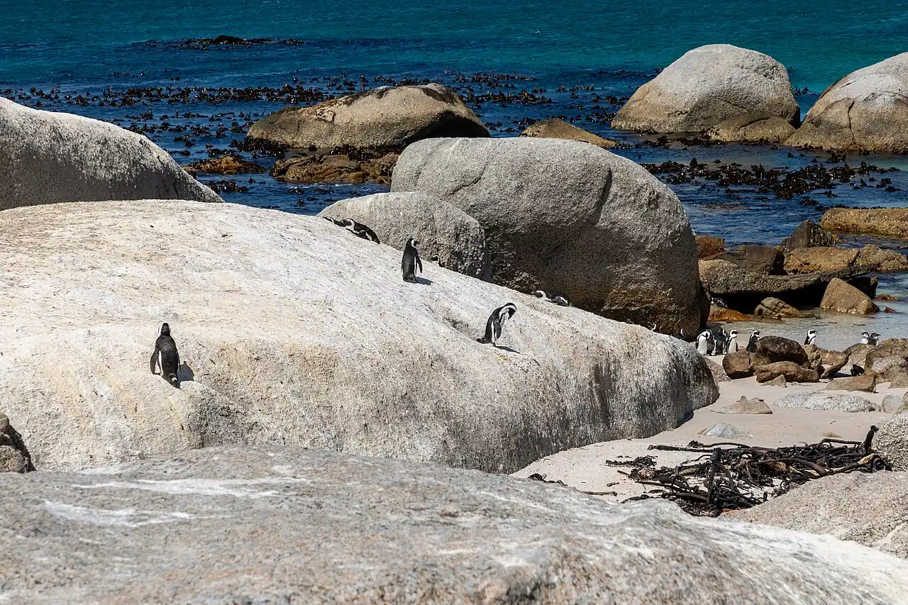

Boulders Beach
Simon’s Town, Le Cap, Afrique du Sud · baignade, snorkeling

Petites criques abritées entre d’énormes blocs de granite, dans le parc national de la Montagne de la Table, où vit une colonie de manchots du Cap. L’eau calme de False Bay se prête à la baignade, mais elle reste fraîche.
- Lieu
- Simon’s Town, Le Cap, Afrique du Sud
- Niveau
- Débutant
- Activités
- baignade, snorkeling
- Type d'eau
- Mer / océan
- Coordonnées
- -34.20, 18.45 (position approximative du secteur)
Dangers à connaître
- Manchots protégés : garde tes distances, ils peuvent pincer.
- Eau fraîche toute l’année, surtout hors été.
Le conseil d'Ocean Buddy
L’accès est payant et réglementé : baigne-toi dans les secteurs ouverts au public et ne touche ni ne nourris les manchots.
Ouvrir dans Ocean Buddy Télécharger sur l'App Store
Source : Fiche Ocean Buddy · septembre 2026 · à vérifier localement.